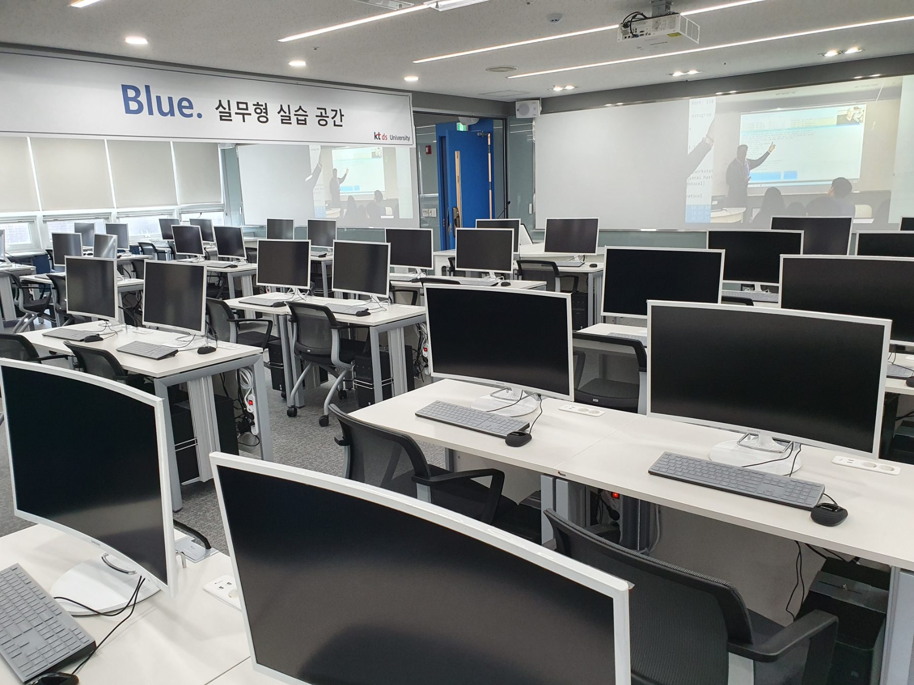
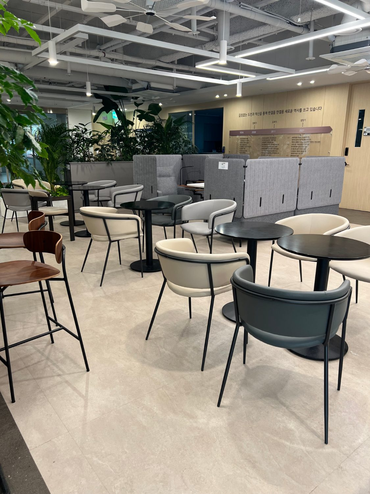
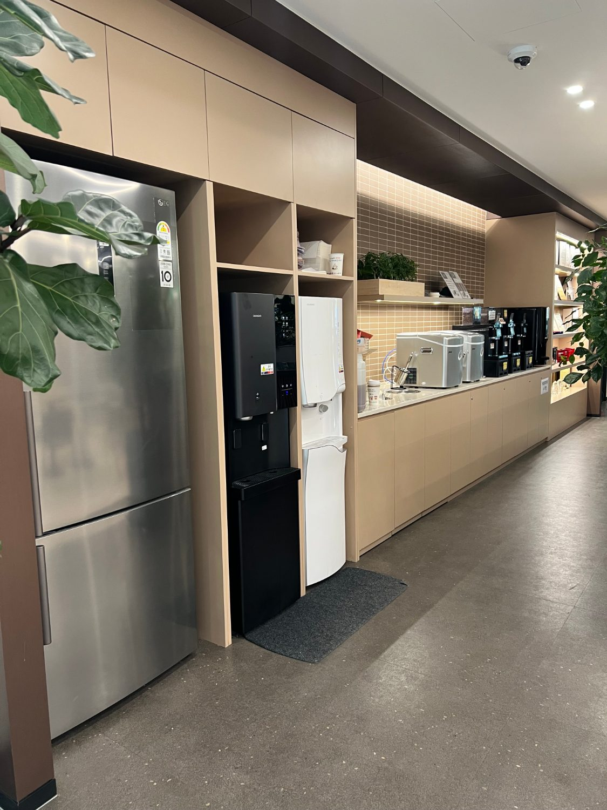
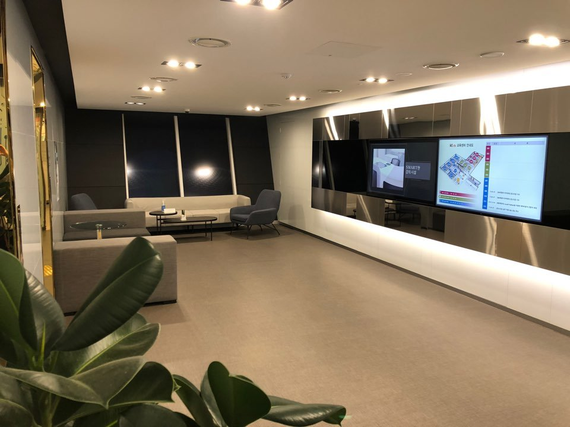
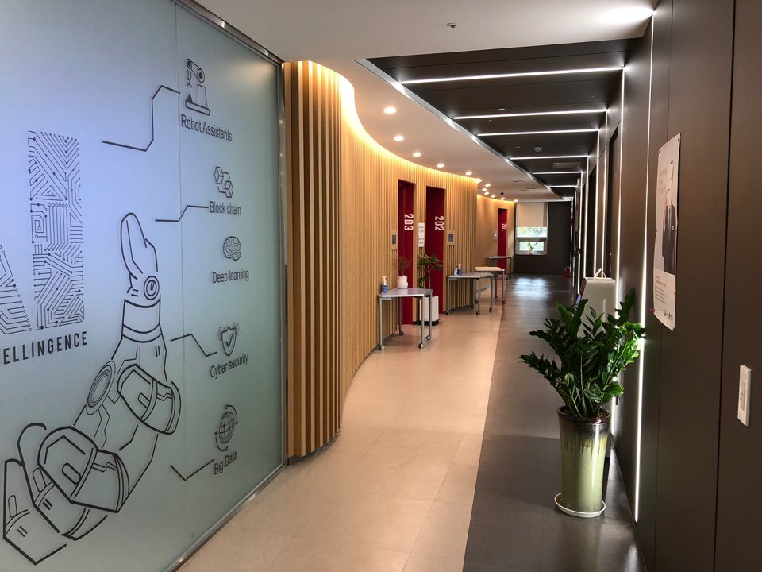

Course
풀스택 + AI 활용
Java · Spring · React · Cloud 풀스택 기본기 위에 Spring AI · Claude Code 활용 역량까지. 약 5개월, 전액 무료로 완성하는 실무형 과정입니다.
15명 모집 과정은 많습니다. 하지만 연간 30명만 교육하는 과정은 많지 않습니다.
AI를 다루는 개발자 교육은 많습니다. 그렇다면, AI 시대에 필요한 개발자는 어떤 사람일까요?
AI가 만든 결과를 이해하고, 검증하고,
서비스로 완성할 수 있는 개발자입니다.
AI 도구는 빠르게 발전하지만, 그 결과물을 판단하고 책임지는 것은 개발자입니다. 구조를 이해하지 못하면 AI가 만든 코드도 제대로 쓸 수 없습니다.
그래서 제28기는 순서를 분명히 합니다. Java · Spring · React · Cloud로 이어지는 탄탄한 개발 기본기를 먼저 쌓고,
그 위에 Spring AI로 LLM을 연동하고 Claude Code로 AI를 활용해 개발하는 실무 역량을 더합니다. kt ds University 제28기는 기술 학습을 넘어 실제 프로젝트를 통해 개발자로 성장하는 과정을 제공합니다.
AI 기술은 계속 바뀝니다.
하지만 개발 기본기는 오래 남습니다.
현장이 가장 많이 찾는 풀스택 개발 역량에, 이번 기수부터 AI 활용 역량을 더했습니다. 하나의 과정에서 두 축을 함께 완성합니다.
기업 현장이 가장 많이 찾는 풀스택 개발 역량. 문법부터 배포까지, 직접 만들며 체득합니다.
LLM을 연동하고, AI를 활용해 개발하는 실무 역량. 프로젝트 전 4일간 AI 개발환경을 집중 학습합니다.
이론이 아니라 실무를 만듭니다. 기본기와 AI 활용 역량을 함께 갖춘, 현장이 바로 투입할 수 있는 개발자로 성장합니다.
화면(React)부터 서버(Spring)·DB·배포까지 한 흐름으로 다루는 개발자. 작은 서비스를 혼자서도 끝까지 만들 수 있습니다.
MSA 구조로 서비스를 나누고, Docker·Azure로 배포·운영하는 개발자. 규모 있는 시스템의 뒷단을 설계합니다.
Spring AI로 LLM을 연동하고 RAG·MCP를 다루며, Claude Code로 AI를 활용해 개발합니다. AI를 개발 도구로 다룰 줄 아는 개발자로 성장합니다.
실제 15~25기 수료생들은 협약기업·협력사 등에서 현업 개발자로 일하고 있습니다. 수료생 인터뷰 보기 →
커리큘럼은 완전 초급부터 단계적으로 설계됐고, 전담 강사·스태프가 끝까지 함께합니다. 실제로 코딩을 처음 접한 분, 직업군인에서 전향한 분도 현업 개발자가 됐습니다.
완전 초급부터 시작해 단계적으로 난이도를 높입니다. 기본 강의는 그대로 유지하고, 마지막에 AI 활용 개발과 팀 프로젝트로 마무리합니다.
기존 기본 강의는 그대로 유지합니다. 프로젝트 시작 전 Spring AI · Claude Code로 AI 개발환경을 학습한 뒤, Claude Code 기반 팀 프로젝트로 실제 서비스 수준의 결과물을 완성합니다.
소수정예로 깊게, 부담 없이, 취업까지. 과정이 끝나는 지점이 아니라 시작이 되도록 설계했습니다.
한 회 15명, 1년에 단 30명만. 한 명도 방치하지 않는 100% 오프라인 몰입형 집체교육.
본인 부담금 0원. 국민내일배움카드도 필요하지 않습니다.
교육에만 집중할 수 있도록 매월 훈련수당을 지원합니다.
AI를 활용한 팀 프로젝트로 실제 서비스 수준의 결과물을 완성합니다.
이력서 · 자기소개서 첨삭부터 기업 매칭, 면접까지 1:1로 지원합니다.
kt ds 컨소시엄 재직자향상과정 전 과정을 수강 중에도, 수료 후에도 들을 수 있습니다.
더 많이 받기보다, 한 사람을 제대로 키우는 데 집중합니다. 한 회당 15명, 1년에 단 두 번 열리는 클래스(상반기/하반기)로, 총 30명만 참여할 수 있습니다. 그래서 교육 중에도 수료 후에도 강사와 전담 스태프가 끝까지 함께합니다.
kt ds 방배 교육센터. 개인 전용 고사양 PC부터 무제한 커피까지, 학습에만 집중할 수 있는 환경을 제공합니다.





1인 1좌석 · 개인 사물함 제공
최신 개발·전공 서적 상시 열람 가능
휴게실 4종 원두커피머신(디카페인 포함) 상시 무료
kt ds 임직원 전용 구내식당 사용
전용 강의실 06:00~22:00 이용 가능
국가가 지원하고 KT 그룹 IT 전문기업 kt ds가 직접 운영하는 국가인적자원개발컨소시엄 채용예정자과정입니다.


KT 그룹 IT 전문기업 kt ds가 직접 운영하는 채용예정자과정입니다.
정부 지원 사업으로 운영되어, 수강료 전액 무료로 진행됩니다.
협력사 및 중소기업 취업과 연계되는 채용예정자 양성 과정입니다.
7월 9일 오리엔테이션으로 이미 시작된 과정에, 신규 수강생이 합류합니다.
"참여가 늦어 미진한 부분들은 제가 보충해드리도록 할게요." — 담당 강사
개발 기본기 + AI 활용 역량. kt ds 컨소시엄 채용예정자과정.